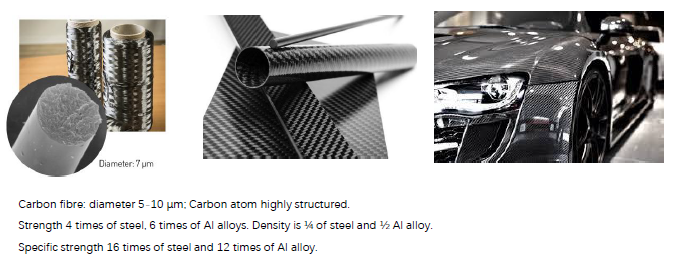
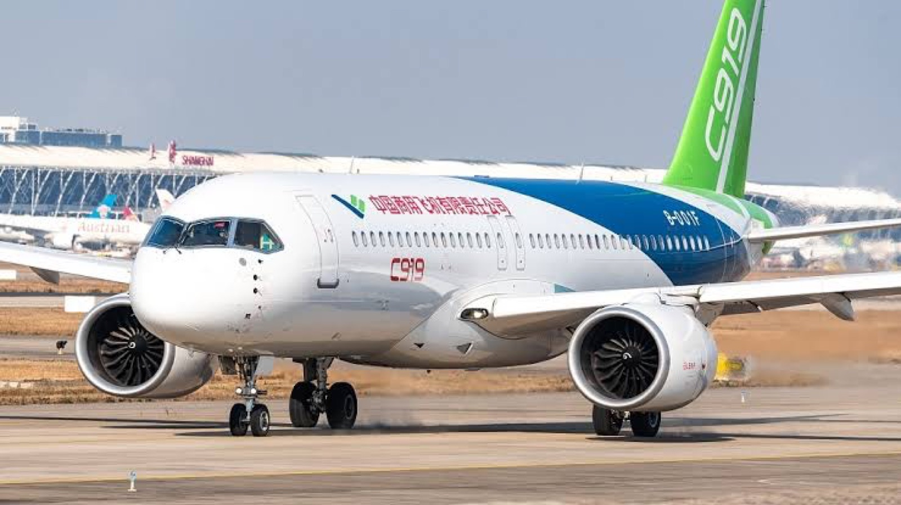
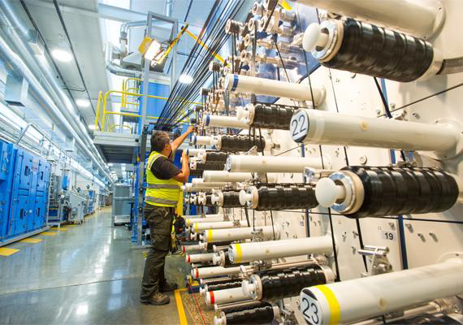
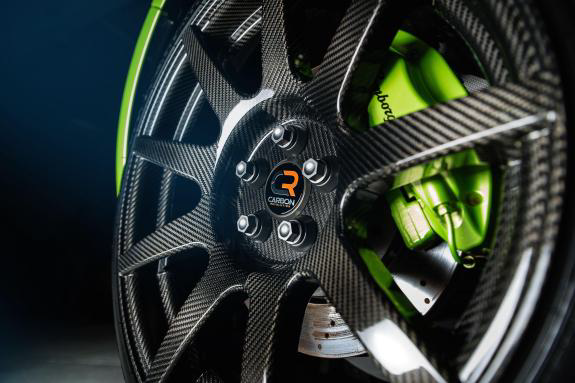

一根直径仅有几微米的碳纤维，为什么能够成为现代航空航天工业的重要支撑？为什么新一代大型客机越来越多地采用这种轻质、高强度材料？从中国大飞机的自主发展，到全球碳纤维产业的技术竞争，再到澳大利亚先进制造业的转型升级，碳纤维复合材料正在深刻影响现代工业的发展方向。
——MCUAA科技系列讲座聚焦碳纤维技术创新、中国大飞机发展与中澳产业合作新机遇
作者：范志良
10月28日晚，墨尔本中国高校校友会联盟（MCUAA）科技系列讲座邀请斯威本科技大学杰出教授王浩作题为《碳纤维复合材料：赋能航空航天与高端制造》的专题学术报告。报告以材料科学与工程技术为主线，通过中国大型客机的发展历程、全球碳纤维技术的演进、中国碳纤维产业化进程，以及澳大利亚碳纤维复合材料研发和产业等一系列生动案例，深入剖析了碳纤维复合材料的技术特点、产业价值与未来发展趋势，并探讨了中澳两国在先进材料与高端制造领域开展合作的潜在机遇。这不仅是一场关于先进材料的科学讲座，更是一次贯通基础科研、工程技术与产业创新的深度探索。
讲座开始前，MCUAA主席范志良博士向与会者介绍了主讲嘉宾王浩教授。王教授现任斯威本科技大学杰出教授、基础设施与材料中心主任。王教授本科毕业于南京理工大学，后获中国科学院金属研究所硕士学位、中国科学院上海硅酸盐研究所博士学位和昆士兰大学博士学位。目前的研究领域主要在碳纤维复合材料、塑料回收及新型建筑技术。
王浩教授在国际学术界具有广泛影响力，曾担任国际知名学术期刊《Composites Part B》主编长达八年，并曾任亚澳复合材料学会主席。目前担任中国复合材料学会国际合作委员会副主任，《复合材料科学与工程》副主编，以及Wiley旗下期刊《Safety Science and Technology》创刊主编。截至目前，王教授已发表学术论文500余篇，H-index达120，论文总引用量超过6万次，并连续多年入选科睿唯安全球高被引学者榜单，是国际复合材料研究领域具有重要影响力的学者。
从鱼竿、自行车到大型客机：认识材料界的“黑色黄金”
提起碳纤维，很多人首先想到的可能是高档钓鱼竿、碳纤维自行车、赛车车身，或者轻便坚固的运动装备。然而，这些只是碳纤维应用的冰山一角。在现代工业体系中，材料、能源和信息被视为推动文明进步的三大支柱。材料技术的每一次重大突破，都可能带来产业形态和制造能力的深刻变化。碳纤维复合材料正是其中具有代表性的一类先进材料。王浩教授首先介绍了碳纤维的基本特性。

碳纤维的直径通常只有5—10微米，比人的头发丝还要细。然而，这种看似纤细的材料，却具有十分优异的力学性能。它以高度有序的碳原子结构为基础，兼具高强度和低密度等突出优势。碳纤维的强度可达到普通钢材的约4倍、铝合金的约6倍，而其密度仅为钢的四分之一、铝合金的二分之一。以比强度（强度与密度之比）衡量，碳纤维可达到结构钢的约16倍、铝合金的约12倍。
高强度、低密度，是碳纤维最突出的技术优势。然而，真正使其成为高端制造关键材料的，并非单纯的碳纤维本身，而是由碳纤维与树脂等基体材料结合而成的复合材料。通俗地说，碳纤维主要承担增强作用，树脂基体则将纤维结合为一个整体，使材料获得特定的结构和性能。通过对纤维取向、铺层数量、铺设方式以及树脂体系进行设计，工程师能够根据不同应用场景，精准调控复合材料的力学性能和结构特性。
这意味着，碳纤维复合材料的应用，并不是简单地用一种材料替代另一种材料，而是涉及材料设计、结构设计与制造工艺的完整技术体系。其真正的价值，也远远超出了传统材料替代的范畴。
从飞机机身、卫星结构，到新能源汽车、风力发电叶片、氢能储运设备，再到无人机、机器人和高端体育装备，碳纤维复合材料正日益成为推动工业轻量化、提升产品性能和促进高端制造升级的重要力量。
从运-10到C919：中国大飞机背后的材料技术变革
讲座中，王浩教授以中国大型客机的发展历程为主线，深入阐述了先进复合材料与航空工业之间密不可分的关系。飞机是现代工业技术高度集成的典型代表，涉及航空发动机、航电系统、结构设计、材料科学和制造工艺等多个复杂领域，每一个环节都需要长期的技术积累。尤其对于大型民航客机而言，机体结构的重量、强度、疲劳性能及维护成本，直接关系到飞机的安全性、可靠性和运营经济性。
从早期的钢结构，到铝合金，再到如今广泛应用的碳纤维复合材料，飞机制造经历了一场深刻的材料技术变革。以波音787和空客A350为代表的新一代宽体客机，大量采用碳纤维复合材料结构，推动了大型复合材料机体设计、自动铺丝、自动铺带及质量控制等关键技术的发展。复合材料在两款飞机全机结构重量中的占比分别达到约50%和52%。在部分私人喷气式飞机和直升机上，这一比例甚至达到70%—80%。
为什么航空工业如此重视碳纤维复合材料？一个重要原因在于，飞机结构重量的降低，有助于减少燃油消耗、增加有效载荷，并改善整体运营经济性。此外，复合材料还具有良好的耐腐蚀性和抗疲劳性能，在合理的结构设计与维护条件下，能够带来显著的综合工程优势。然而，将这类材料真正应用于大型民航客机，绝非简单的材料替换。航空结构对安全性、可靠性、制造一致性以及适航验证都有着极其严格的要求。
中国大飞机的发展历程，正是一个国家从技术探索走向自主研制、逐步迈向产业化发展的缩影。王浩教授将中国民用大型客机的发展概括为以下几个重要阶段。
第一阶段：运-10时代——自主探索的起点。1970年，中国启动“708工程”，开始研制国产大型喷气式客机运-10。经过多年的设计与制造，运-10于1980年9月首次试飞成功，累计完成170多个飞行小时和130多次起降，曾飞抵北京、广州、乌鲁木齐、拉萨等城市。运-10的研制，体现了中国自主设计和制造大型喷气式客机的早期探索成果，是中国航空工业发展史上的重要里程碑。
然而，受市场规模、经济性、发动机及航电技术配套能力，以及国家发展战略调整等多方面因素影响，运-10项目最终于1986年彻底终止。
第二阶段：技术积累与国际合作。运-10项目结束后，中国通过与国外企业合作生产麦道-80、麦道-90等机型，逐步积累了飞机总装制造、供应链管理、民用航空质量管理体系以及国际合作等方面的经验。尽管这一阶段未能实现自主大型客机研制的持续推进，但相关技术、人才和产业经验的积累，为后来中国民用航空工业的重新起步奠定了重要基础。
第三阶段：ARJ21支线客机——重建民机研发体系。2002年启动的ARJ21（现C909）项目，是中国民用航空工业重新起步的重要标志。它不仅是一款支线客机，更承担着培养适航人才、重建民机研发体系、建立供应链体系以及探索市场运营模式等多重使命。许多后来参与C919研发的团队和技术人员，都在ARJ21项目中积累了宝贵的研发与工程实践经验。
第四阶段：C919大型客机——迈向自主研制的新阶段。2007年，国务院批准大型飞机重大专项立项；2008年，中国商飞成立。C919于2017年首飞成功，2022年获得中国民航局颁发的型号合格证，并于2023年正式投入商业运营。C919定位于158—192座级干线客机市场，与波音737系列和空客A320系列处于同一级别，是中国民用航空工业自主研制能力取得重要进展的标志。

第五阶段：规模化与国际化——从成功研制走向市场竞争。王浩教授介绍了截至2026年C919的发展情况，包括累计交付数量、商业运营情况以及后续衍生机型的研发进展。他特别指出，中国大飞机的发展已经进入一个新的阶段：成功研制只是第一步，如何进一步提高生产效率、保障供应链稳定、建立完善的全球服务体系，并逐步赢得国际市场的长期信任，才是未来面临的更大挑战。
在先进复合材料的实际应用方面，C919的发展也提供了一个值得关注的案例。C919最初设计方案中的复合材料用量约为20%，但最终实际应用比例约为11.5%，主要用于后机身、水平尾翼和垂直尾翼等部位。对于中央翼等关键承力结构，采用复合材料需要重新考虑结构设计、制造工艺、质量控制以及长期安全验证等一系列问题。为了控制研发风险、保障研制进度，相关结构最终采用了金属材料方案。
这一案例说明了一个重要的工程规律：先进材料的应用，并非单纯追求实验室中的高性能指标，而是必须综合权衡安全性、可靠性、经济性与制造可行性，在多重工程约束之间寻求最佳平衡。
王浩教授进一步指出，中国大飞机的发展有三个值得重视的经验与启示：一是自主研发体系必须保持持续性，不能轻易中断；二是技术研制成功并不等于市场成功，真正形成市场竞争力同样重要；三是航空发动机、先进复合材料等关键技术仍需持续突破，才能不断提升自主研制能力。
对于正在推进的C929宽体客机，其复合材料用量目标约为53%。对于如此高的复合材料用量，这意味着，未来大型客机的设计需要从研发之初就充分考虑复合材料的结构优势、制造工艺和工程验证要求，而不是在成熟的金属结构设计基础上简单替换材料。从运-10到C919，再到未来的C929，中国大飞机的发展不仅是一部航空工业的发展史，也是一部先进材料技术不断突破、工程制造能力持续提升的演进史。
从实验室走向产业：中国碳纤维工业的追赶与突破
如果说大型客机展示了碳纤维复合材料的高端应用，那么碳纤维本身的发展历程，则是一部科技创新、技术追赶与产业化竞争的历史。
碳纤维并非近几十年才出现的新材料。早在19世纪末，碳丝就已被应用于早期电灯的灯丝制造。然而，当时使用的碳丝与今天作为高性能结构增强材料的碳纤维，在制备工艺、材料性能和应用领域等方面存在本质区别。20世纪50年代，美国研究人员开始系统探索利用人造丝等前驱体制备高性能碳纤维。此后，美国、日本和英国的科研人员在石墨纤维研究、聚丙烯腈（PAN）前驱体路线，以及热处理和拉伸工艺等方面取得了一系列重要进展。
1971年，日本东丽（Toray）开始商业化生产Torayca碳纤维，标志着现代高性能碳纤维工业化生产逐步走向成熟。此后，碳纤维的应用领域不断拓展，从航空航天、卫星和高性能运动装备，逐渐延伸至大型民航飞机、汽车、风力发电、氢能储运以及机器人等产业。
王浩教授将中国碳纤维工业的发展概括为以下几个重要阶段。
第一阶段：基础研究与技术起步。中国早在20世纪60年代便开始开展碳纤维研究。中科院长春应用化学所和中科院金属所科研人员围绕前驱体制备、纺丝、稳定化、碳化和石墨化等核心工艺进行了持续探索。然而，由于文化大革命的影响，中国早期碳纤维研究被终止。
第二阶段：技术追赶与国产化突破。进入21世纪，随着国家科技计划的支持，以及科研团队和企业的持续投入，中国碳纤维产业迎来了重要发展机遇。其中，光威复材的发展历程颇具代表性。
企业创始人陈光威早期从事传统钓具和复合材料产品经营。面对碳纤维长期依赖进口的局面，他选择从传统渔具产业向高技术碳纤维领域转型。光威复材于2005年实现T300级碳纤维技术突破，2008年建成国内首条千吨级碳纤维生产线，2010年又实现T700级碳纤维技术突破，并逐步推进工程化应用。
与此同时，恒神股份、中简科技等企业也相继进入碳纤维产业，推动中国逐步建立起涵盖原丝制备、碳纤维生产、织物加工、预浸料制造及复合材料应用等环节的产业链能力。
这一时期的技术突破表明，中国碳纤维产业的发展模式正在发生转变：从过去主要依靠科研机构开展基础研究，逐步走向科研创新与企业产业化协同推进的新阶段。
第三阶段：快速扩产与国产替代。2010年至2020年代初，随着风力发电、体育休闲、压力容器以及航空航天等领域需求持续增长，中国碳纤维产业进入快速发展阶段。中复神鹰、光威复材、中简科技、吉林化纤、恒神等企业逐渐形成各具特色的产业布局，推动产业规模和技术能力不断提升。据相关统计，2025年中国碳纤维运行产能约17万吨，约占全球总产能的一半（实际产量约9万吨）；2024年国产碳纤维供应占国内总需求的比例约为80%。与此同时，T1000、T1100等高性能碳纤维产品在工程化和产业化方面也取得新的进展。这些变化表明，中国碳纤维产业已逐步从过去高度依赖进口，发展成为全球重要的碳纤维生产和供应力量。
然而，王浩教授并没有简单地将产能增长等同于产业竞争力的全面提升。他特别强调：产能不等于产量，产量也不等于高端产品的有效供给。
真正进入航空航天等高端应用领域，仅仅拥有高性能碳纤维还远远不够，还需要高质量树脂、预浸料、自动铺丝与铺带设备、固化工艺、连接技术和无损检测等一系列配套技术，同时建立严格的质量控制体系，并通过复杂的工程验证和适航认证。任何一个环节存在短板，都可能影响最终产品的性能、可靠性及工程应用能力。
因此，中国碳纤维工业下一阶段的竞争，已不再仅仅是纤维性能和生产规模的竞争，更是完整复合材料技术体系、先进制造能力和工程应用水平的综合竞争。
澳大利亚的机遇：从Carbon Nexus到先进复合材料产业平台
在介绍中国碳纤维产业的发展之后，王浩教授将视角转向澳大利亚，分享了当地先进复合材料产业的发展历程，并探讨了值得关注的中澳合作机遇。澳大利亚拥有较强的高校科研实力、科研基础设施和先进材料研发能力，但如何将科研优势转化为具有国际竞争力的产业优势，始终是其制造业发展面临的重要课题。
Carbon Nexus 研发平台的启示
王浩教授以位于维多利亚州吉朗（Geelong）的Carbon Nexus为例，介绍了澳大利亚在碳纤维研发领域的早期布局。
2000年代中期，随着福特汽车制造业务以及Alcoa Point Henry铝冶炼厂等传统工业活动发生重大变化，吉朗地区面临着产业转型的压力。为探索新的产业发展方向，维多利亚州政府、迪肯大学（Deakin University）以及CSIRO等科研力量开始积极布局先进材料领域，希望通过科研创新和技术转化培育新的制造业增长点。
经过前期规划与持续投资，Carbon Nexus于2014年正式开放，成为具备工业级研发能力的碳纤维研究设施。这一项目体现了一种值得借鉴的创新模式：政府提供政策与资金支持，大学承担科学研究和人才培养任务，科研机构提供技术支撑，工业企业则推动研发成果向实际产品和产业应用转化。

然而，王浩教授也指出，先进科研设施的建成只是第一步。要保持长期竞争力，还需要持续的企业研发合同、稳定的资金来源、设备维护投入以及高水平专业人才的支持。
Carbon Nexus建设期间，中国碳纤维产业仍处于技术追赶阶段，双方原本具有较为明显的技术与产业互补性。然而，由于澳大利亚本土大型汽车及航空制造业基础相对薄弱，加之此前地缘政治因素对与中国相关产业链合作造成一定限制，Carbon Nexus面临企业研发合同不足、运营成本较高以及长期资金投入压力等问题。
这一案例引发了一个值得深思的问题：一个具有潜力的中澳合作机会，因为地缘政治因素的原因被白白失去。
Carbon Revolution：碳纤维车轮的产业化探索与挑战
Carbon Revolution是一家位于吉朗的先进制造企业，于2007年创立。其目标是将原本主要应用于赛车和高端小批量定制市场的一体式碳纤维车轮，发展成为能够满足汽车原厂（OEM）要求的工程化产品，并逐步实现规模化生产。
这一过程面临的挑战，远不只是以碳纤维替代传统铝合金。要实现真正的汽车工业化应用，企业必须解决结构设计、纤维铺放、树脂成型、固化工艺、产品一致性、质量控制以及产品认证等一系列复杂的工程技术问题。

Carbon Revolution的重要贡献，正是推动碳纤维车轮从原型开发和高端小批量定制，逐步迈向符合汽车工业要求的工程验证和规模化供应阶段。
然而，先进技术并不必然意味着商业成功。该企业经历了长期亏损和债务重组，其澳大利亚运营子公司于2026年3月进入自愿管理程序，随后公司于同年5月完成重组，转为私人持有企业。
这一案例再次说明，先进制造企业的成功不仅取决于技术创新，还需要具备有竞争力的制造成本、稳定的供应链、规模化生产能力以及可持续的商业模式。
对于澳大利亚而言，如何将已有的科研和技术优势与中国成熟的制造业体系及产业链资源相结合，推动先进材料技术实现更大规模的商业化应用，是一个值得深入探索的方向。
中澳合作：把科研平台与产业链优势真正结合起来
讲座的最后一个重要议题，是中澳两国在碳纤维复合材料和先进制造领域的合作空间。
王浩教授指出，中国在碳纤维产业化、汽车制造、供应链配套以及规模化生产方面已经形成了较强的产业基础；澳大利亚则拥有大学科研资源、先进材料研究能力，以及部分具有国际竞争力的研发和测试设施。双方在技术研发、产业配套和工程应用等方面具有较强的互补性。
以新能源汽车为例，中国拥有庞大的汽车产业规模、较为完整的零部件供应链，以及快速发展的新能源汽车和高端汽车品牌。澳大利亚则可以发挥其在先进复合材料研究、工艺开发和产品验证方面的优势。双方可以围绕下一代碳纤维车轮、汽车轻量化结构、低成本成型工艺，以及碳纤维热塑性复合材料等方向开展合作。
其中，热塑性复合材料尤其值得关注。与传统热固性树脂体系相比，热塑性复合材料具有快速成型、可重复加热加工以及潜在回收利用等优势。对于需要降低制造成本、提高生产效率的大规模工业应用而言，热塑性复合材料有望成为未来先进制造领域的重要发展方向。
在介绍未来合作模式时，王浩教授重点展示了Swinburne–CSIRO Testlab。该平台位于CSIRO Clayton园区，是斯威本科技大学与CSIRO共同建设的先进复合材料制造研发平台。
与传统主要开展材料性能测试的实验室不同，Testlab具备工业级制造研发能力，能够支持工艺开发、中试及产业化验证。这意味着企业不仅可以在这里研究材料本身的性能，还可以围绕具体产品开展制造工艺开发、自动化生产验证和工程化测试，为科研成果向实际产品转化提供重要支撑。
王浩教授进一步提出了一个具有建设性的中澳合作构想：由中国企业提出具体的产品需求和产业技术问题，Swinburne–CSIRO Testlab提供研发、中试和工程验证平台，双方科研人员与工程技术团队共同开发解决方案，最终推动科研成果走向实际应用。
在这一合作模式下，中国企业需要带着真实的产品需求、技术难题和产业化目标进入研发平台；澳大利亚大学和科研机构则发挥自身在技术研发、先进设备和专业人才方面的优势，双方共同解决实际工程问题。
这种以产业需求为牵引、以科研平台为支撑、以商业化应用为目标的合作模式，有望充分发挥中澳双方的比较优势，为两国在先进材料和高端制造领域的合作探索一条新的路径。
深入交流，共话产业发展前景
在讲座后的互动问答环节，MCUAA 副主席、墨尔本清华校友会会长陈建博士担任主持。现场气氛热烈，与会听众踊跃提问，围绕碳纤维复合材料在航空领域的应用比例、从热固性材料向热塑性材料转型的技术趋势及其在航空航天领域的应用前景、澳大利亚高校和科研机构与中国、美国企业开展合作的可能性等热点议题，与王浩教授展开了交流。王浩教授结合自身多年的科研经历及与产业界合作的丰富经验，对听众提出的问题进行了细致解答，并从技术发展、产业应用和国际合作等多个维度分享了自己的见解，使与会者对碳纤维复合材料的技术演进、产业化进程及未来发展方向有了更加深入的认识。
MCUAA 将持续举办科技系列讲座，邀请不同领域的专家学者，围绕人工智能、先进制造、材料科学、能源技术及其他前沿科技领域，分享最新研究成果、产业发展趋势与创新思考。MCUAA致力于为墨尔本中国高校校友社区搭建高质量的学习与交流平台，促进高校、科研机构与产业界之间的沟通合作，让前沿科技走近社区，让学术思想连接产业，让科研成果促进交流合作，让校友资源转化为推动科技创新与社会发展的积极力量。